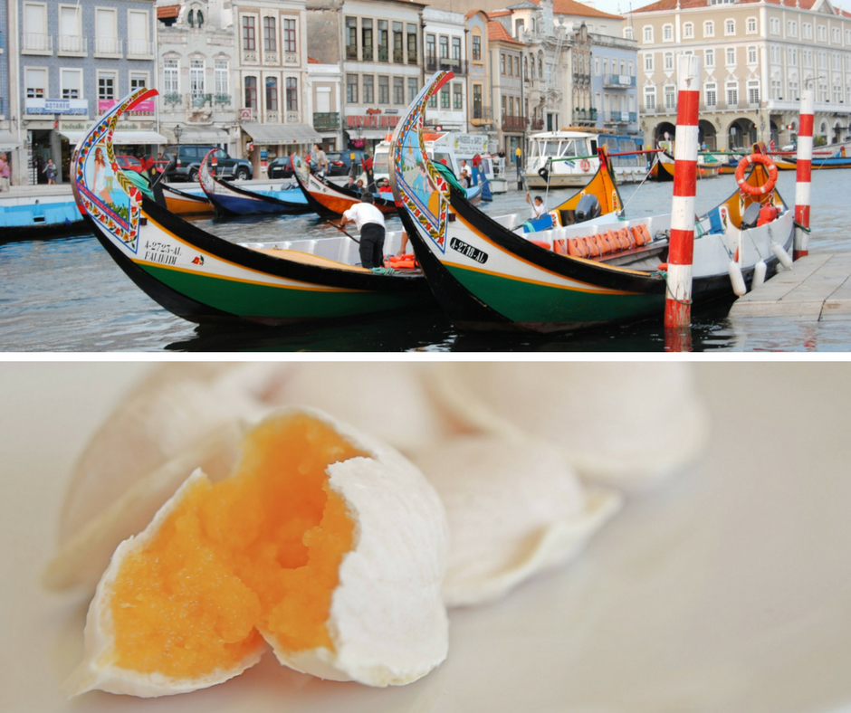
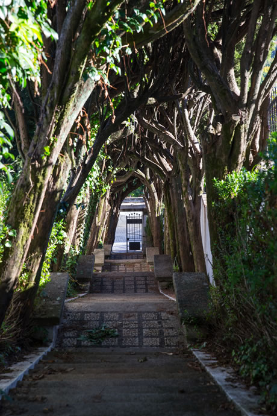
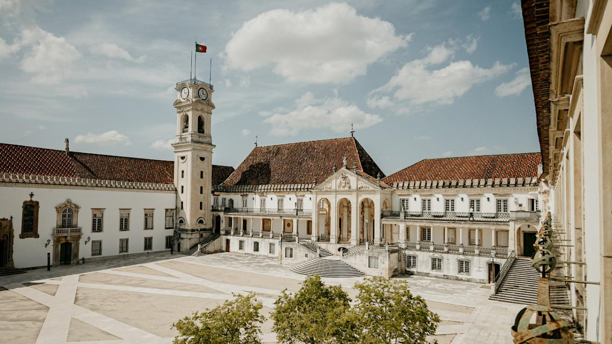
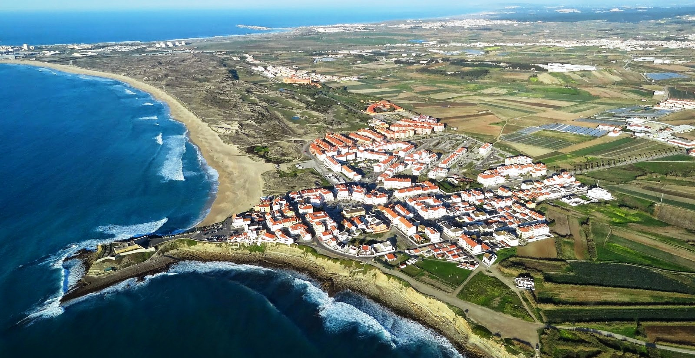
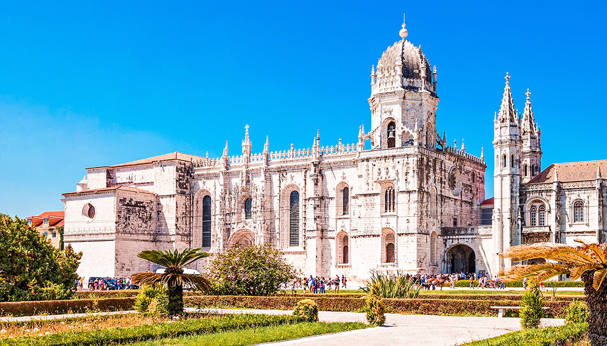
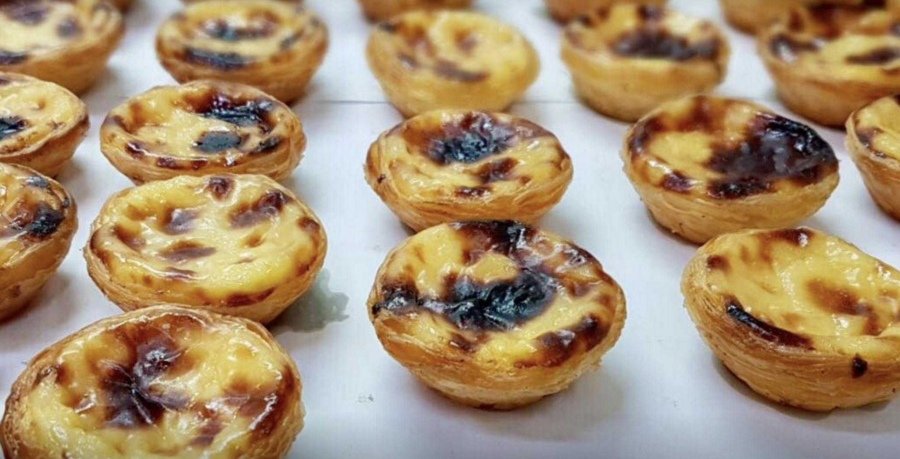
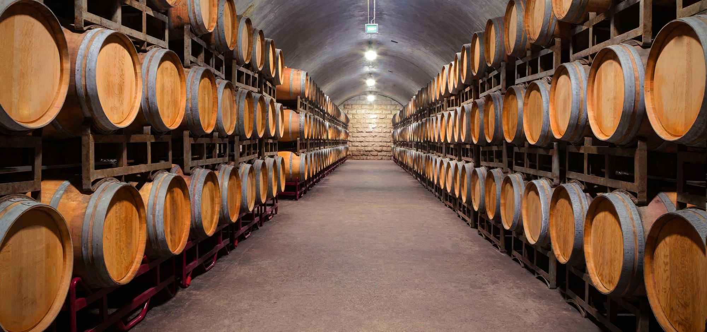
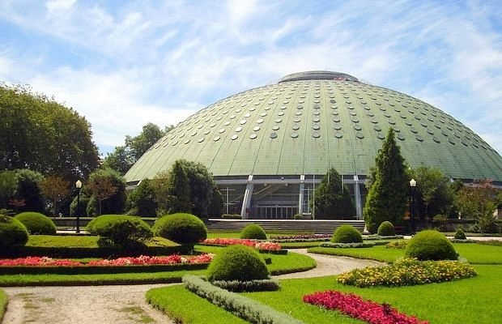
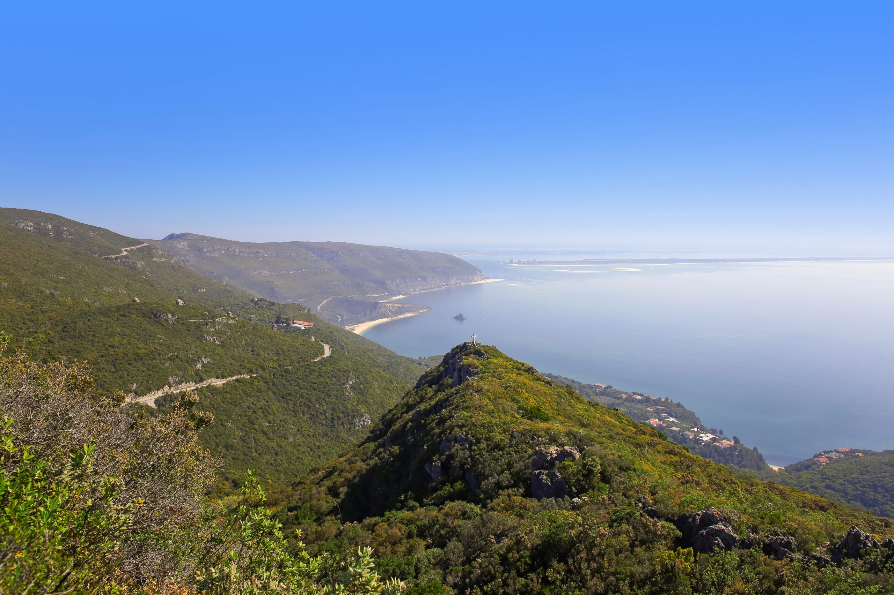
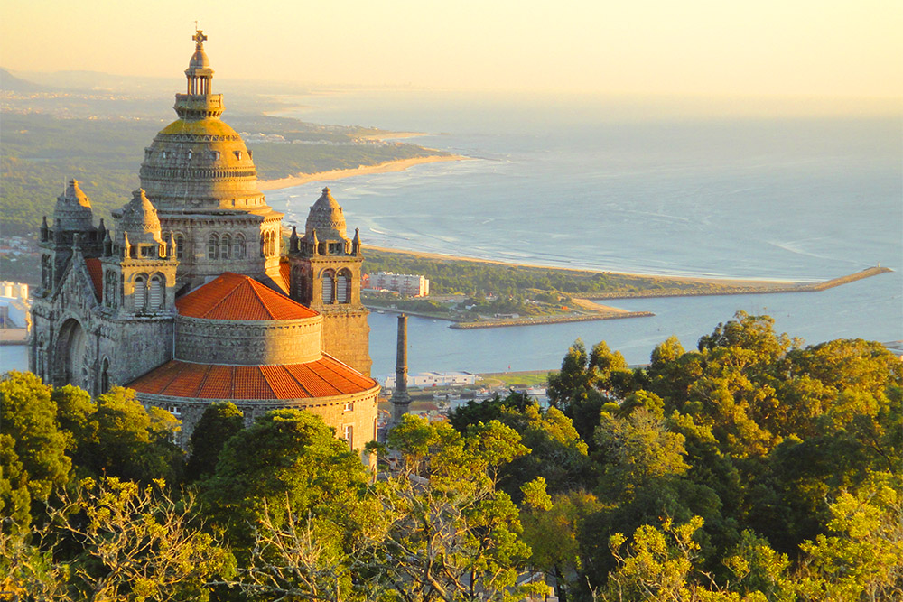

Pontos Turísticos
Esta secção foi feita para que as pessoas possam saber o que visitar nas suas viagens neste caso, não vamos falar de todos os pontos Turísticos de Portugal
mas sim dos pontos Turísticos com relação às estações que temos e vamos falar sobre essa região o que achamos que deve ser visitado.
Aveiro

Aveiro é detentora de uma paisagem natural e urbana única, dominada pela Ria de Aveiro e os braços de água que penetram o espaço urbano e que marcaram de forma permanente a história, o património, a cultura e a identidade local.
A bordo de uma das embarcações típicas, onde se destaca o barco Moliceiro, aproveite para conhecer a cidade através dos canais que, ao pôr-do-sol, passam de cor prata a cor de ouro com o reflexo dos raios solares. Existem outras modalidades de transportes turísticos disponíveis que o poderão levar num passeio mais alargado para conhecer a restante cidade e os seus principais núcleos de interesse turísticos, como o bairro típico de pescadores e marnotos, o Bairro da Beira-Mar, a antiga zona nobre da cidade, outrora muralhada, o Bairro do Alboi, o Cais da Fonte Nova ou a Universidade de Aveiro, um verdadeiro museu de arquitetura portuguesa contemporânea ao ar livre.Nao se esqueça ainda de levar os ovos-moles doce tipico da região.
Os preços para andar no Moliceiro variam um pouco de companhia para companhia mas para adultos será por volta de Adulto (desde 13 anos) 12 € e Criança (dos 4 aos 12 anos) será por volta do 5.5€
Beja

Sobre Beja o que pode ser visitado nada mais é do que o castelo de Beja e também a praia fluvial dos 5 reis e que tem acesso a mobilizade reduzida e esta areia é muito fina, vale a pena a visita.
Braga

Sobre Braga acho que uma das construções mais conhecidas do país e muito conhecida do norte o Santuário de bom Jesus do Monte.O santuário é dedicado ao Senhor Bom Jesus e é um complexo formado por uma igreja, uma escadaria em formato de Via Sacra, um parque, um funicular e alguns hotéis.
Para as pessoas com mobilidade reduzida, bem nao se preocupem porque podem sempre subir de funicular
Castelo Branco

Sobre Castelo Branco é facilmente visitada a pé num dia mas talves aquilo que possa destacar é passagem entre o Castelo e o Miradouro de São Gens e também vista de Castelo Branco a partir do Miradouro de São Gens por serem estremamente lindos.
Coimbra

Uma das mais conhecidas construções a Universidade de Coimbra conhecida pela sua beleza e por estar na parte alta de Coimbra, destacando-se ainda mais, e dar um passeio por coimbra cheio de beleza e diversão.
Évora

A capela dos Ossos fica dentro da Igreja São Francisco e foi construída no século XVII por três monges que queriam transmitir a ideia de que “alguma hora, a morte irá chegar”. A placa na capela explica isso: “Nós, ossos que aqui estamos, pelos vossos esperamos”. As paredes são literalmente “decoradas” com ossos e crânios humanos.
Faro

A praia de Faro e São muitas as atividades desportivas que se realizam nesta praia durante todo o ano, sendo que o Centro Náutico da
Câmara Municipal assume um papel estratégico na promoção da canoagem, vela e windsurf e na promoção da
atividades promovidas pelas empresas que operam no ramo da animação turística. Durante a época balnear, esta
instalação camarária conta ainda com o Centro Azul da Praia de Faro (centro de interpretação e educação ambiental da
Bandeira Azul no concelho).
Nesta praia existem alguns restaurantes onde poderão ser apreciados os pratos típicos da zona e a grande diversidade
de mariscos. Experimente o "Arroz de Lingueirão”, prato típico Algarvio.
O serviço de nadadores salvadores é assegurado em seis postos de praia. Sendo que três destes postos de praia são
assegurados pela Câmara Municipal de Faro e os restantes encontram-se integrados nos três apoios balneares
existentes. Para esta praia está ainda atribuída a concessão de exploração de um apoio recreativo.
Esta praia é oficialmente classificada com o galardão “Praia Acessível”. A Câmara Municipal de Faro disponibiliza nesta
praia uma cadeira destinada para facilitar o acesso ao banho a pessoas com mobilidade reduzida, rampas e
passadiços de acesso ao areal, sanitários e posto de primeiros socorros acessíveis e estacionamentos ordenados com
lugares para as viaturas ao serviço das pessoas com deficiência.
Guarda

Sobre guarda apenas pensso que daquilo que seja mais acessivel e bonito é o Parque Urbano do Rio Diz, para passar um tempo.
Leiria

Sobre Leiria pode tirar um pouco do seu tempo e visitar tanto o Castelo de Pombal e o Forte da praia da consolação sendo o forte a minha localização preferencial e tem uma linda vista.
Lisboa
Torre de Belém
 Quando pensamos em Portugal, ela logo nos vem à cabeça: a famosa Torre de Belém, que serviu de fortaleza para proteger a cidade de ataques durante o século XVI. A zona é bonita e o passeio, imperdível.
Quando pensamos em Portugal, ela logo nos vem à cabeça: a famosa Torre de Belém, que serviu de fortaleza para proteger a cidade de ataques durante o século XVI. A zona é bonita e o passeio, imperdível.
Construída entre 1515 e 1521 na foz do rio Tejo para proteger a cidade e o Mosteiro dos Jerônimos de ataques, a Torre de Belém é parada obrigatória para quem está de passagem por Lisboa. O espaço já foi usado também como prisão, e suas celas subterrâneas eram inundadas.

Mosteiro dos Jerónimos
a fila de turistas do lado de fora não é à toa: o Mosteiro dos Jerónimos impressiona por sua deslumbrante arquitetura e cuidado com os entalhes. Além disso, ali estão enterradas algumas das mais importantes personalidades portuguesas, como Luís de Camões, Vasco da Gama e Fernando Pessoa.

Fábrica dos Pastéis de Nata,
Vai um pastel de nata quentinho por aí? Esse não é qualquer um, mas o original Pastel de Belém. Com sua massa crocante e recheio cremoso, o doce é um dos símbolos da gastronomia portuguesa e faz parte da experiência de visitar o país.
E para finalizar a Praça do comércio que era o Antigo Terreiro do Paço, a Praça do Comércio encontra-se bem às margens do rio Tejo, e tinha o papel de receber reis e chefes de Estado que visitavam Portugal de barco, o que a torna uma das mais importantes praças da cidade.
Atenção que esta é só alguns exemplo que eu mais gosto, Lisboa tem muitas coisas para serem vistas, mas nada mais do que fazerem uma pesquisa e ficarem a conhecer sobre os mais diversos Pontos Turísticos que esta cidade oferece.
Porto
Já todos nós sabemos que o Porto e o Benfica são rivais mas tal como eles a cidade do Porto e de Lisboa também o são visto que as belezas desta cidade do Porto não ficam para trás.
Caves de Vinho do Porto,
estar na cidade e não visitar as caves do famoso Vinho do Porto é como ir em Paris e não ver a Torre Eiffel. Elas ficam localizadas na Ribeira, do outro lado do rio, e mais especificamente no Cais de Vila Nova de Gaia.

Ribeira e Ponte Luís I,
a Ribeira do Porto é uma das regiões mais importantes no centro histórico. Situada na margem do Rio Douro, é lá que ficam aquelas famosas casas coloridas, com fachadas decoradas, que atraem turistas todos os anos. Até para quem mora na cidade, o local é uma atração para um fim de tarde e tem um pôr do sol incrível!

E temos também para finalizar a Casa da Música e também os Jardins do Palácio de Cristal, mas volto a repetir que esta cidade tem muito a oferecer e com uma pesquisa encontram mais do que aquilo que aqui está.
Setúbal

Para Setubal temos duas que eu gosto muito o centro de setúbal e a Serra da Arrábida, sendo a serra da Arrábida a minha favorita o Parque Natural da Arrábida conta com uma área de, aproximadamente, 10.500 hectares. Nessa Serra da Arrábida, que tem título de parque desde 1976, você encontra uma vegetação variada e incrível, muitas praias, grutas, castelos e paisagens encantadoras! O Parque Natural da Arrábida fica junto ao mar e se destaca por sua beleza incomparável, com o azul do mar fazendo contraste com os penhascos calcários e o verde da vegetação que cobre a Serra.
Viana

É, parece que ja estamos no fim e vamos acabar com a beleza de Viana com o Navio Gil Eannes, as bolas de berlim de canela, absolutamente fantásticas e é claro o monumento lindo e obrigatório de viana o Santuário de Santa Luzia.
A partir da colina de Santa Luzia pode contemplar uma vista deslumbrante sobre a costa e o vale do Lima. Para subir até ao templo poderá utilizar o teleférico (preços: ida 2,00€; ida e volta 3,00€) que parte de uma zona próxima da estação ferroviária.
Também poderá ir de carro (3,5 km), ou a pé (2 km por etapas).